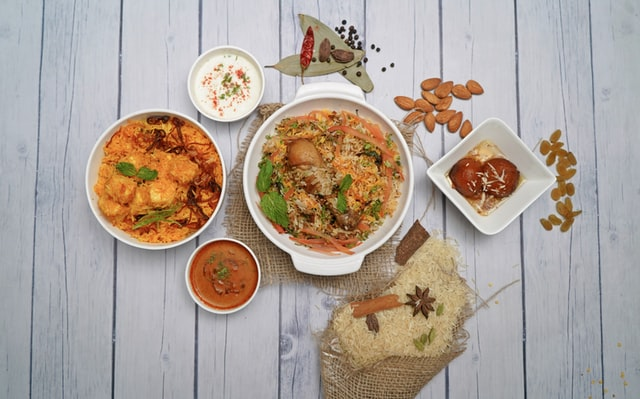

With all the sumptuous dishes, intricate ingredients, and tongue-tickling flavors, there is a lot of good Indian food, and Indian cuisine is one of the most popular cuisines in the world. Some of the most popular Indian dishes incorporate a whole palette of flavors – sweet, sour, spicy, tangy – all at once. It is an amalgamation of a wide net of spices, pulses, seasonings, and cereals.
Every region in India has its own unique cuisine indigenous to that locale. The types and varieties of dishes available in India are innumerable, all equally delectable.
